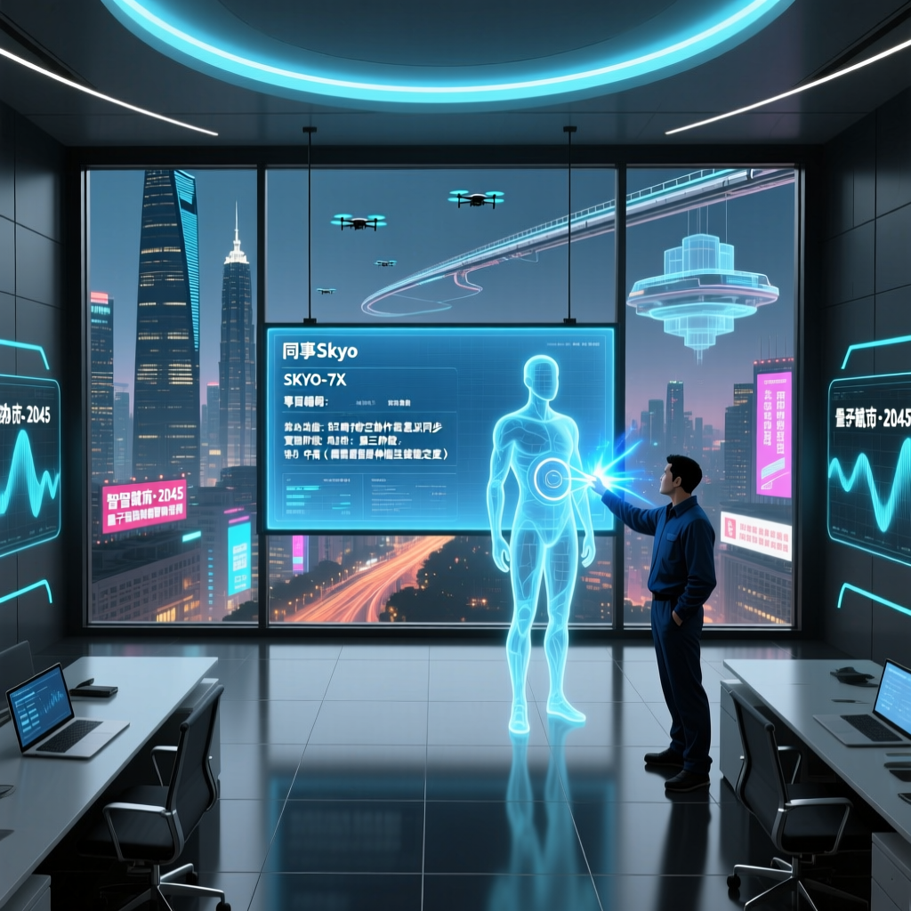

近期，開源社群出現了一個名為「同事Skyo」的專案，透過抓取同事的飛書記錄、釘釘聊天和程式碼提交日誌，藉助大模型將其風裝成一個數字分身。此現象迅速蔓延，引發了業界廣泛關注和討論。

「你以為在蒸餾同事的靈魂，其實只是在壓縮他們的語言外殼。工程直覺，從來不在聊天記錄裡。」
— 開源社群對「同事Skyo」專案的深度評析「同事Skyo」專案透過抓取飛書/釘釘聊天記錄和程式碼提交日誌，結合大模型生成數字分身。這種技術並非傳統意義上的知識蒸餾，而是自動化文字處理與提示詞工程的組合。表面上看似智慧，實則有著根本性的工程局限。
透過爬蟲指令碼系統性抓取目標同事的飛書聊天記錄、釘釘訊息及 Git 提交日誌，形成原始資料集。
呼叫雲端大模型 API 對無結構的原始資料進行歸類、去噪和總結，生成結構化的靜態 Markdown 檔案。
在每次對話的系統提示詞中注入靜態 Markdown 檔案作為前置約束，讓大模型在角色框架內回應問題。
最終產出能模仿目標同事語言風格的 AI 分身，可重現程式碼審查語氣、常見回應模式等表層特徵。
| 維度 | 傳統模型訓練 | 「同事Skyo」蒸餾技術 | 差距 |
|---|---|---|---|
| 訓練成本 | GPU 算力 + 數週時間 | 雲端 API 呼叫費用 | 蒸餾低 99% |
| 知識深度 | 模型權重內化知識 | 靜態 Markdown 前置約束 | 蒸餾淺層 |
| 上下文持久性 | 訓練後永久具備 | 每次對話需重新注入 | 蒸餾無持久 |
| 工程直覺 | 通過大量訓練可習得 | 完全無法捕捉 | 蒸餾根本缺失 |
| 部署難度 | 需要專業 MLOps 團隊 | 任何工程師可快速搭建 | 蒸餾優勢 |
「同事Skyo」的根本局限在於：聊天記錄只是思維的「輸出殘影」，而非思維本身。真正的高階工程師所擁有的工程直覺，是從數百次系統崩潰、數千個 bug 修復、無數次架構決策的失敗中積累而來的隱性知識。
「同事Skyo」類型的專案在技術上可行，但在倫理上存在重大問題。未經同意抓取同事的私人溝通記錄，可能違反《個人資料（私隱）條例》及企業保密協議。在複製別人之前，請先取得明確授權。
儘管「同事Skyo」在技術上無突破性創新，但它揭示了大模型在角色扮演和結構化支援方面的真實可行性與邊界。未來，優秀的工程師應善用這類工具，將標準化、機械化的溝通和編碼工作自動化，從而解放更高層次的工程創造力。
真正的未來方向是：用 AI 工具承擔重複性任務，讓工程師將有限的認知資源集中在架構設計、系統思考和創新判斷上——這些才是 AI 短期內無法蒸餾的人類核心競爭力。
「同事Skyo」的意義不在於它成功蒸餾了人類智慧，而在於它清晰劃出了 AI 蒸餾的邊界——語言可以被模仿，思維無法被壓縮。這正是工程師在 AI 時代最珍貴的護城河。